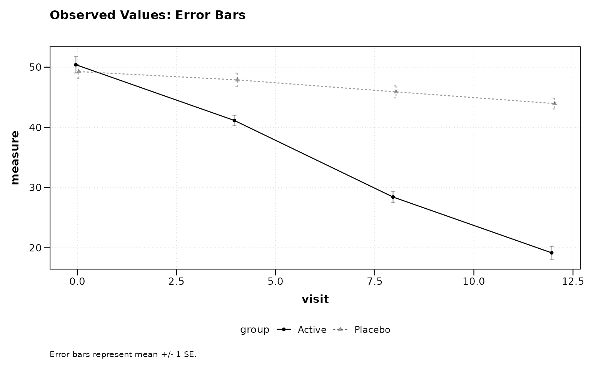
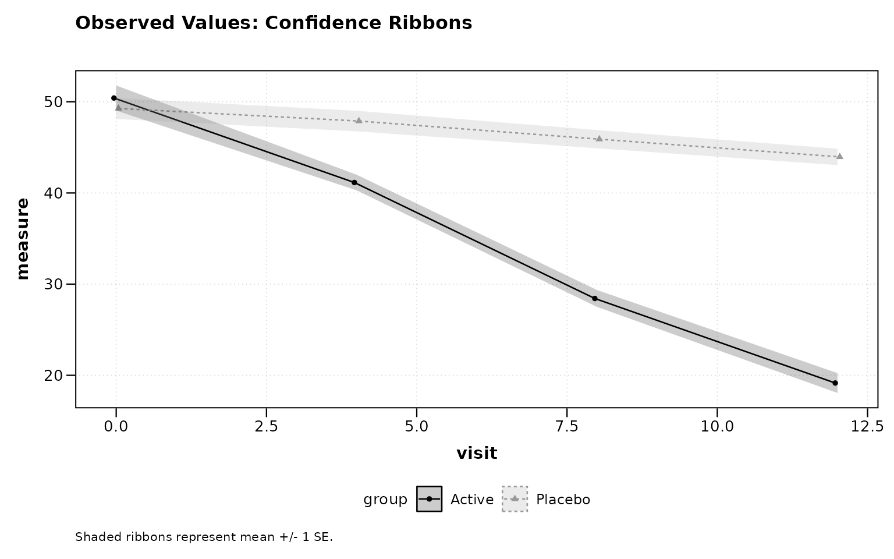
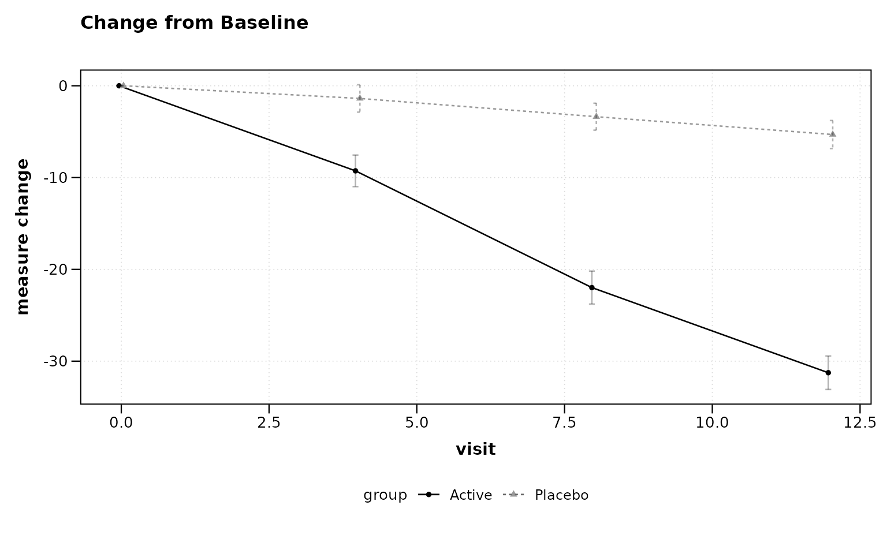
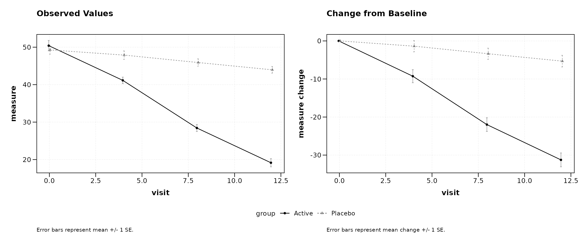
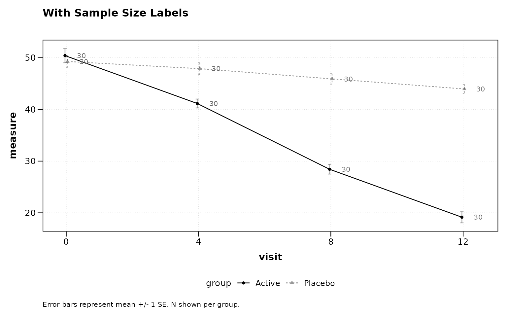
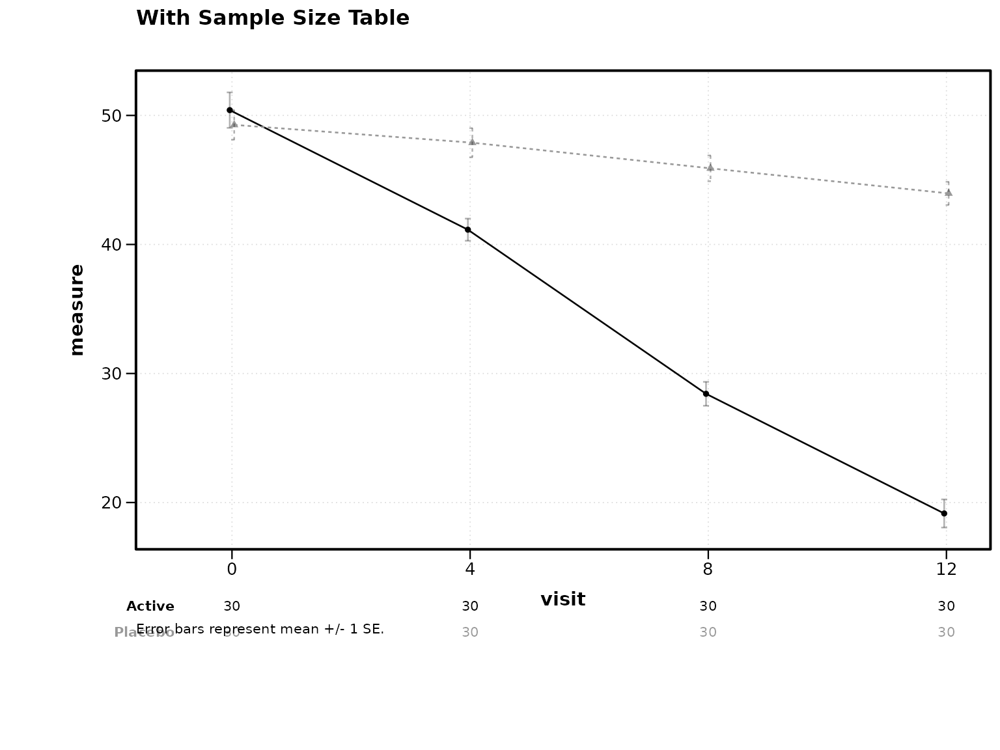
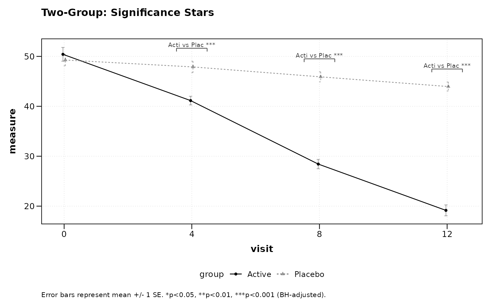
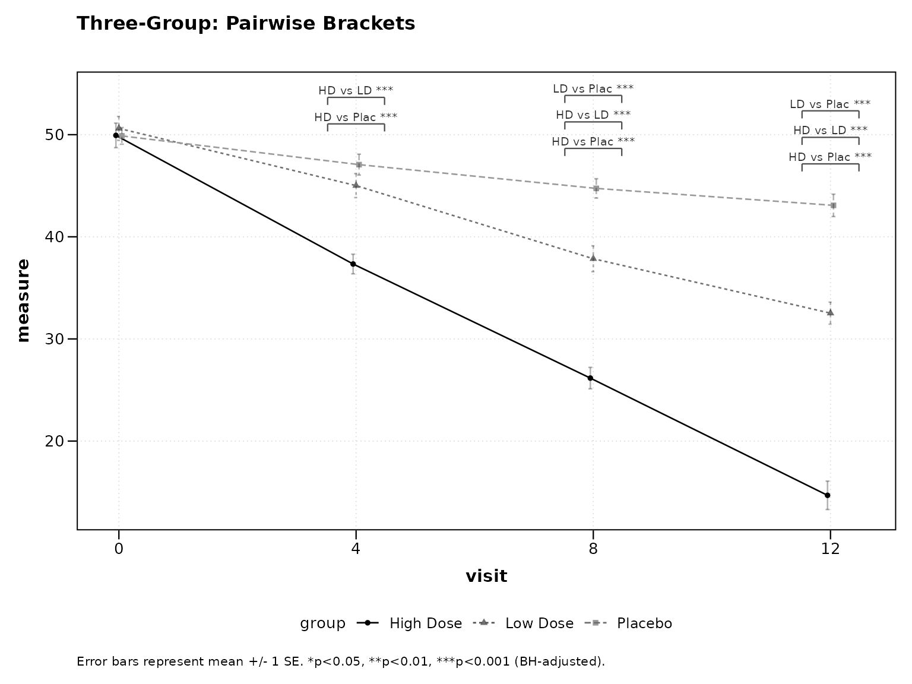
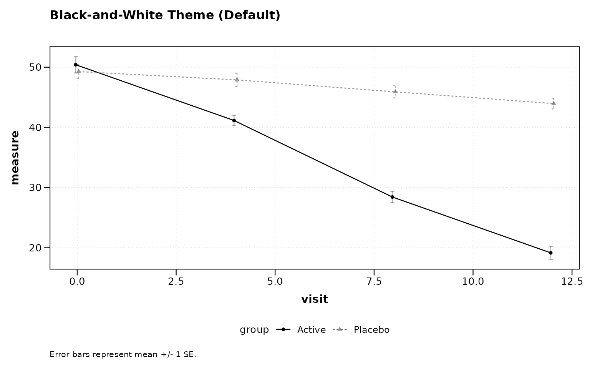
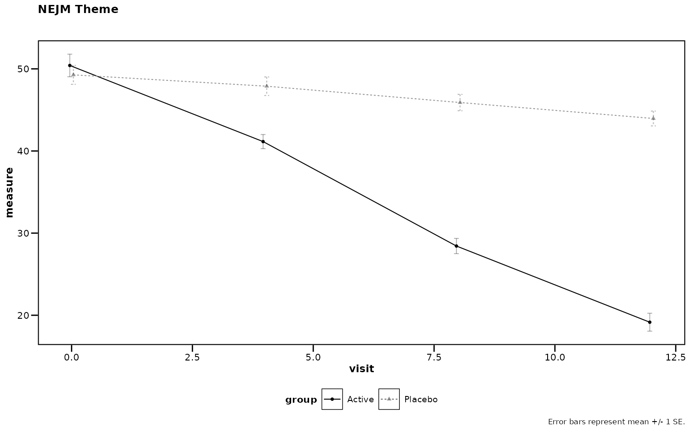

Quickstart Guide: zzlongplot
Ronald (Ryy) G. Thomas
2026-05-01
Source:vignettes/quickstart.Rmd
quickstart.RmdOverview
zzlongplot provides a flexible framework for longitudinal data visualization in R. The package uses a formula-based interface for creating publication-quality plots of repeated measurements over time, with specialized support for clinical trials.
Simulated Data
All examples use the following two-arm and three-arm datasets.
set.seed(42)
n_subj <- 60
subj_info <- data.frame(
subject_id = 1:n_subj,
treatment = rep(c("Active", "Placebo"), each = 30)
)
two_arm <- expand.grid(
subject_id = 1:n_subj,
visit = c(0, 4, 8, 12)
) |>
left_join(subj_info, by = "subject_id") |>
mutate(
response = 50 +
visit * ifelse(treatment == "Active", -2.5, -0.5) +
rnorm(n(), 0, 6)
)
subj_info3 <- data.frame(
subject_id = 1:90,
treatment = rep(
c("High Dose", "Low Dose", "Placebo"), each = 30
)
)
three_arm <- expand.grid(
subject_id = 1:90,
visit = c(0, 4, 8, 12)
) |>
left_join(subj_info3, by = "subject_id") |>
mutate(
response = 50 +
visit * ifelse(
treatment == "High Dose", -3,
ifelse(treatment == "Low Dose", -1.5, -0.5)
) + rnorm(n(), 0, 6)
)Basic Usage
The main function lplot() uses a formula interface:
outcome ~ time | group.
Observed Values with Error Bars
# Figure 1
lplot(two_arm,
response ~ visit | treatment,
baseline_value = 0,
caption = "Error bars represent mean +/- 1 SE.",
title = "Observed Values: Error Bars")
Figure 1: Observed values with error bars (default).
Observed Values with Confidence Ribbons
# Figure 2
lplot(two_arm,
response ~ visit | treatment,
baseline_value = 0,
error_type = "band",
caption = "Shaded ribbons represent mean +/- 1 SE.",
title = "Observed Values: Confidence Ribbons")
Figure 2: Observed values with confidence ribbons.
Change from Baseline
# Figure 3
lplot(two_arm,
response ~ visit | treatment,
baseline_value = 0,
plot_type = "change",
caption = "Error bars represent mean change +/- 1 SE.",
title = "Change from Baseline")
Figure 3: Change from baseline plot.
Combined Plot
# Figure 4
lplot(two_arm,
response ~ visit | treatment,
baseline_value = 0,
plot_type = "both",
caption = "Error bars represent mean +/- 1 SE.",
caption2 = "Error bars represent mean change +/- 1 SE.")
Figure 4: Side-by-side observed and change plots.
Sample Size Annotations
Display per-group sample sizes at each timepoint, either as in-plot labels or as a color-coded table below the x-axis.
# Figure 5
lplot(two_arm,
response ~ visit | treatment,
baseline_value = 0,
show_sample_sizes = TRUE,
caption = "Error bars represent mean +/- 1 SE. N shown per group.",
title = "With Sample Size Labels")
Figure 5: Sample sizes as point labels.
# Figure 6
lplot(two_arm,
response ~ visit | treatment,
baseline_value = 0,
show_sample_sizes = TRUE,
sample_size_opts = list(position = "table"),
caption = "Error bars represent mean +/- 1 SE.",
title = "With Sample Size Table")
Figure 6: Sample size table below axis.
Statistical Annotations
Two-Group Comparison
Stars appear above timepoints where the adjusted p-value crosses standard significance thresholds.
# Figure 7
lplot(two_arm,
response ~ visit | treatment,
baseline_value = 0,
statistical_annotations = TRUE,
caption = "Error bars represent mean +/- 1 SE. *p<0.05, **p<0.01, ***p<0.001 (BH-adjusted).",
title = "Two-Group: Significance Stars")
Figure 7: Two-group significance stars.
Three-Group Comparison with Pairwise Brackets
For three or more groups, pairwise brackets with significance stars are displayed at each timepoint.
# Figure 8
lplot(three_arm,
response ~ visit | treatment,
cluster_var = "subject_id",
baseline_value = 0,
statistical_annotations = TRUE,
caption = "Error bars represent mean +/- 1 SE. *p<0.05, **p<0.01, ***p<0.001 (BH-adjusted).",
title = "Three-Group: Pairwise Brackets")
Figure 8: Three-group pairwise brackets.
Contrast Display
When using test_method = "mmrm", emmeans contrast
results (LS mean difference, 95% CI, p-value) can be displayed as a
footnote or a table below the plot.
Footnote Mode
# Figure 9
lplot(two_arm,
response ~ visit | treatment,
baseline_value = 0,
statistical_annotations = TRUE,
test_method = "mmrm",
contrast_display = "footnote",
caption = "Error bars represent mean +/- 1 SE. MMRM contrasts shown below.",
title = "MMRM: Contrast Footnote")Table Mode
# Figure 10
lplot(two_arm,
response ~ visit | treatment,
baseline_value = 0,
statistical_annotations = TRUE,
test_method = "mmrm",
contrast_display = "table",
caption = "Error bars represent mean +/- 1 SE. MMRM contrast table below.",
title = "MMRM: Contrast Table")Publication Themes
Black-and-White Print Theme
Differentiates groups by linetype and shape rather than color, suitable for journals that print in grayscale.
# Figure 11
lplot(two_arm,
response ~ visit | treatment,
baseline_value = 0,
caption = "Error bars represent mean +/- 1 SE.",
title = "Black-and-White Theme (Default)")
Figure 11: Black-and-white print theme (default).
NEJM Theme
# Figure 12
lplot(two_arm,
response ~ visit | treatment,
baseline_value = 0,
caption = "Error bars represent mean +/- 1 SE.",
title = "NEJM Theme") +
theme_nejm()
Figure 12: NEJM journal theme.
Tips
Ordering Categorical Visit Labels
When the x-axis variable is character or factor (e.g., visit names
rather than numeric week numbers), R defaults to alphabetical order.
Convert to a factor with explicit levels before calling
lplot():
df$visit <- factor(df$visit,
levels = c("Screening", "Baseline", "Week 4",
"Week 8", "Week 12"))
lplot(df, response ~ visit | treatment,
cluster_var = "subject_id",
baseline_value = "Baseline")Numeric visit variables (e.g., visit = c(0, 4, 8, 12))
are sorted numerically by default and do not require this step.
Quick Reference
Formula Syntax
outcome ~ time | group-
outcome: Response variable (y-axis) -
time: Time variable (x-axis) -
group: Grouping variable (colors/lines)
Key Parameters
| Parameter | Description | Default |
|---|---|---|
plot_type |
“obs”, “change”, or “both” | “obs” |
error_type |
“bar” or “band” | “bar” |
baseline_value |
Value identifying baseline | NULL |
show_sample_sizes |
Show N at each timepoint | FALSE |
statistical_annotations |
Significance annotations | FALSE |
test_method |
“parametric”, “nonparametric”, or “mmrm” | “parametric” |
contrast_display |
“footnote” or “table” (MMRM) | NULL |
theme |
“bw” for black-and-white print | “bw” |
cluster_var |
Subject ID column | “subject_id” |
facet_form |
Faceting formula (e.g., ~ site) |
NULL |
Next Steps
-
vignette("zzlongplot_introduction")– Detailed introduction -
vignette("mmrm-analysis")– MMRM analysis workflow -
vignette("clinical-trials")– Clinical trial applications -
vignette("cdisc-compliance")– CDISC-compliant workflows -
vignette("publication-themes")– Publication-ready themes
Rendered on 2026-04-13 at 16:32 PDT. Source: ~/prj/sfw/01-zzlongplot/zzlongplot/vignettes/quickstart.Rmd